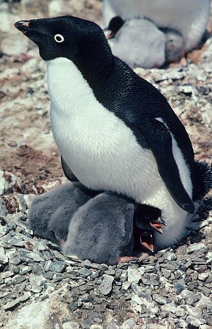

O pinguim (RO 1971: pingüim) é uma ave da família Spheniscidae, altamente modificadas para a uma vida aquática, sendo suas asas adaptadas para promover impulso através da água. Essas aves estão amplamente distribuídas pelas águas mais frias do hemisfério sul, especialmente na Antártida e ilhas dos mares austrais, chegado à Terra do Fogo, Ilhas Malvinas e África do Sul, entre outros. Apesar da maior diversidade de pinguins encontrar-se na Antártida e regiões polares, há também espécies que habitam nos trópicos como por exemplo o pinguim-das-galápagos (Spheniscus mendiculus), nas Ilhas Galápagos. Considerando o número de indivíduos, a maioria ocorre nas proximidades da Antártida, porém apenas as espécies Pygoscelis adeliae e Aptenodytes forsteri estão restritas a essa região, de forma que a maioria das 18 espécies está distribuída entre 45ºS e 60°S, com grande diversidade ocorrendo na Nova Zelândia e em ilhas ao redor.
A sua morfologia, em geral, pouco varia, com forma e estrutura corporal muito semelhante, adaptadas para nadar e mergulhar. Seus corpos são aerodinâmicos e suas asas são modificadas para formar nadadeiras rígidas e planas, que promovem uma boa propulsão no nado. Variam, entretanto em tamanho, desde Eudyptula minor com 40 cm e 1,1 kg, até Aptenodytes forsteri com 115 cm e mais de 30kg. Além disso, as suas plumagens são semelhantes, caracterizadas por partes pretas e brancas, exceto em relação à cor e ao padrão de plumagem da cabeça, que confere uma das principais diferenças entre as espécies. Algumas espécies têm cristas e plumas variadas no topo da cabeça (Eudyptes), outras possuem manchas auriculares (Aptenodytes), enquanto algumas possuem um padrão de faixas pretas e brancas (Spheniscus). Os adultos se alimentam no mar, capturando zooplâncton, peixes pequenos e lulas, enquanto os filhotes são alimentados diretamente por regurgitação. Por sua vez, são vítimas da predação de orcas e focas-leopardo.
